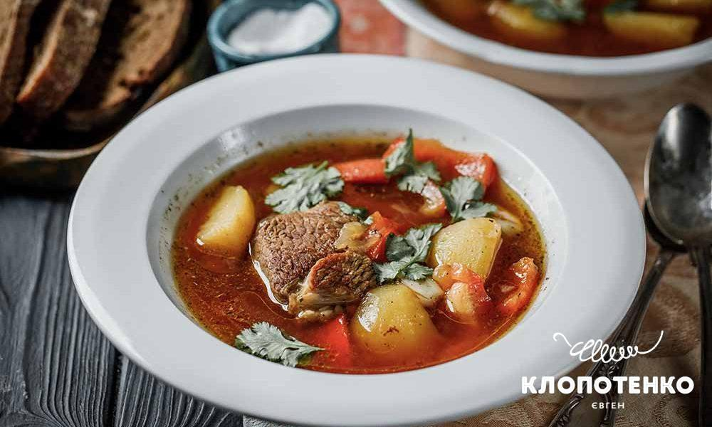
Шурпа
Ситний та пряний східний суп з бараниною та великими шматочками овочів.
| ПЕРШІ СТРАВИ |
|---|

Ситний та пряний східний суп з бараниною та великими шматочками овочів.
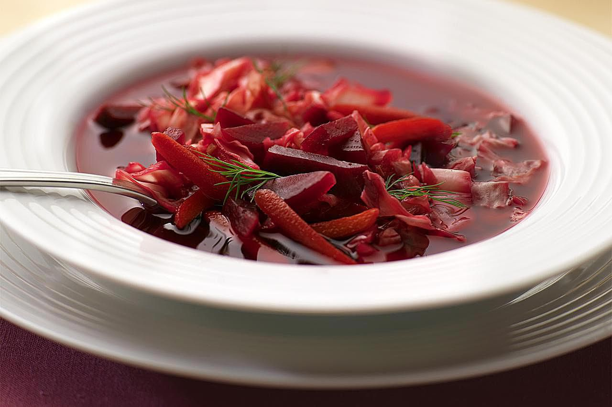
Традиційний український борщ на насиченому м'ясному бульйоні з духмяними спеціями.
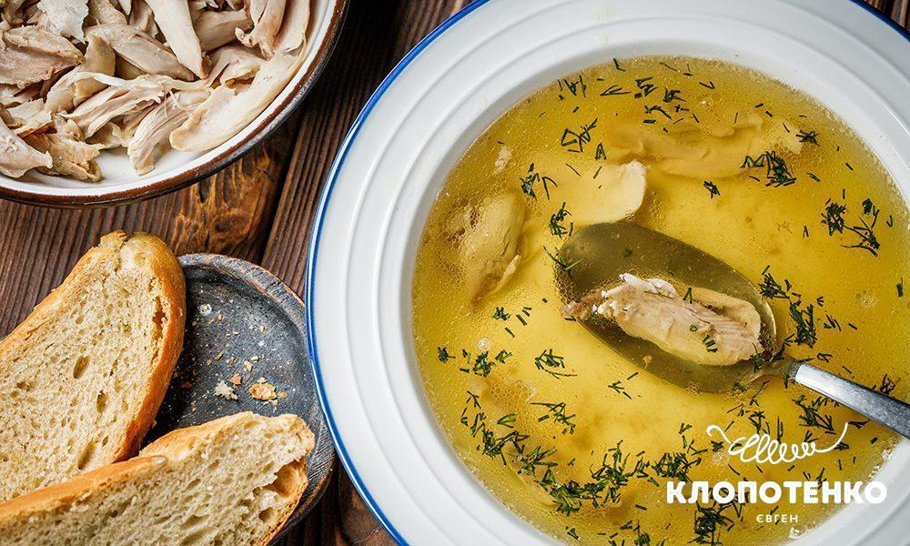
Прозорий курячий бульйон з домашньою локшиною, зеленню та перепелиним яйцем.
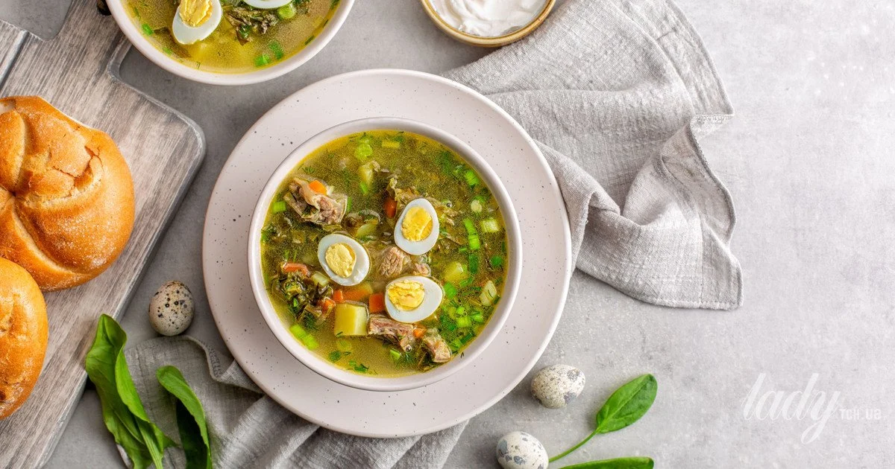
Весняний суп зі свіжим щавлем, молодою картоплею та відвареним яйцем.
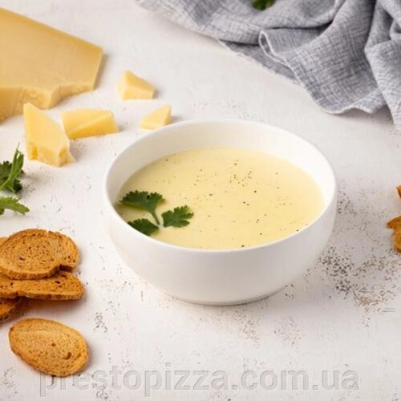
Ніжне поєднання декількох видів сиру та вершків. Подається із хрусткими грінками.
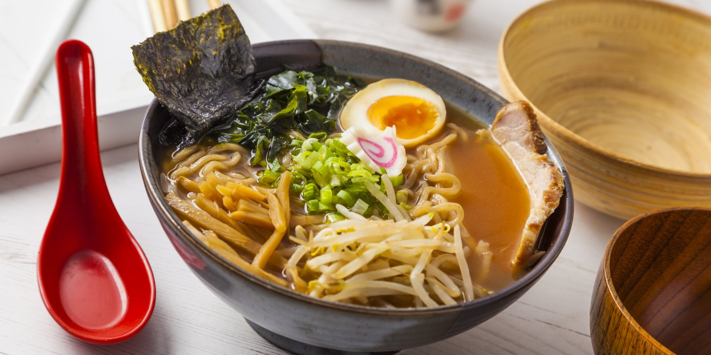
Класичний азійський суп з пшеничною локшиною, свининою чашу та бамбуком.
| САЛАТИ |
|---|
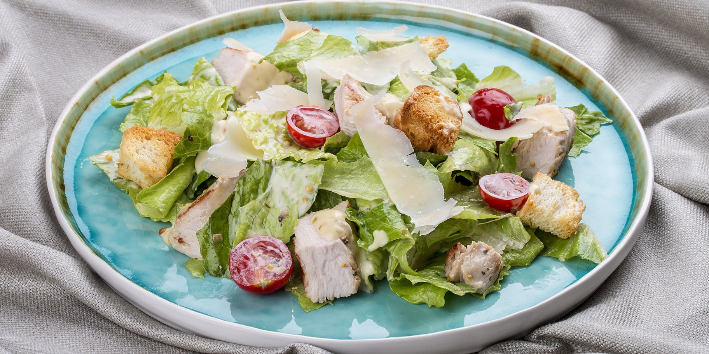
Класичний мікс салатів, курка гриль, крутони, пармезан та фірмовий соус.
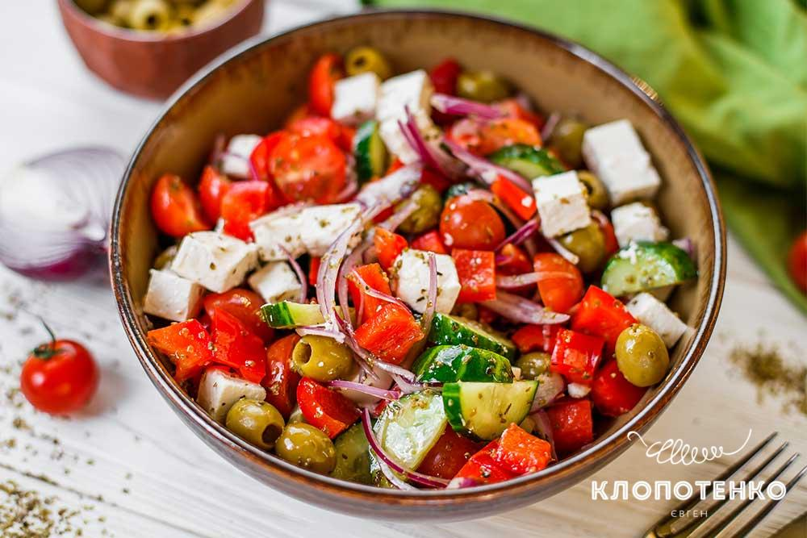
Свіжі овочі, сир фета, оливки каламата та заправка на основі оливкової олії.
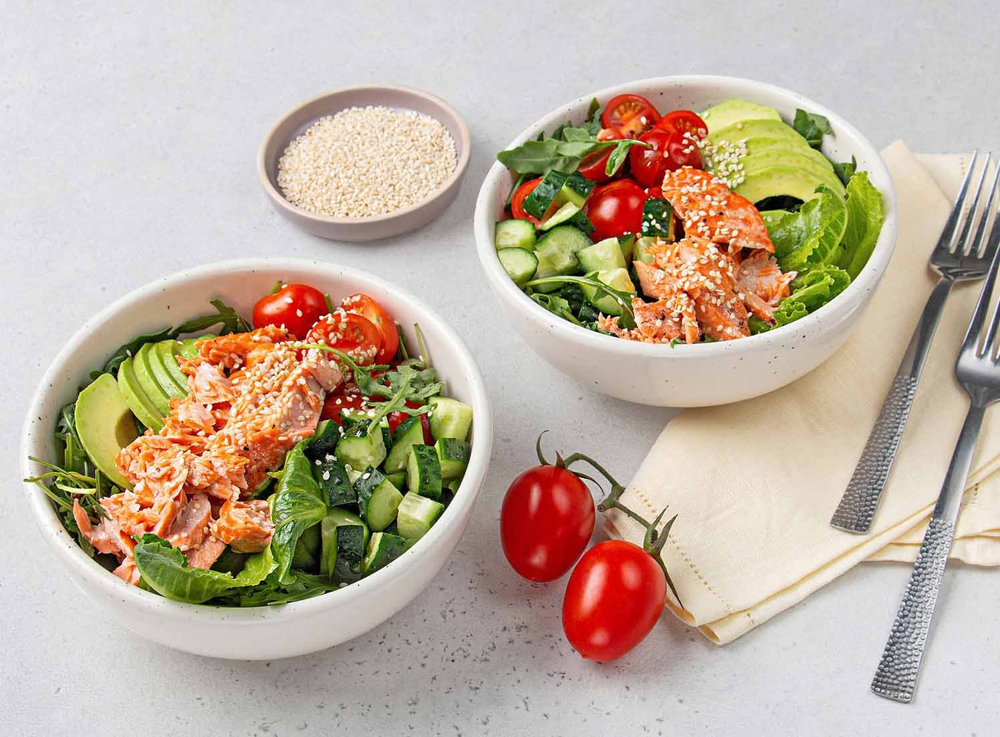
Слабосолений лосось, авокадо, мікс зелені та кунжутна заправка.
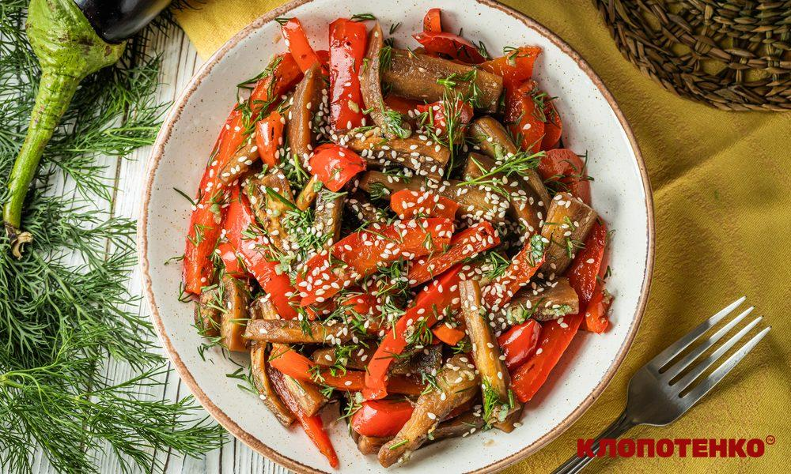
Ніжна яловичина гриль, обсмажені печериці та овочі під карамельним соусом.
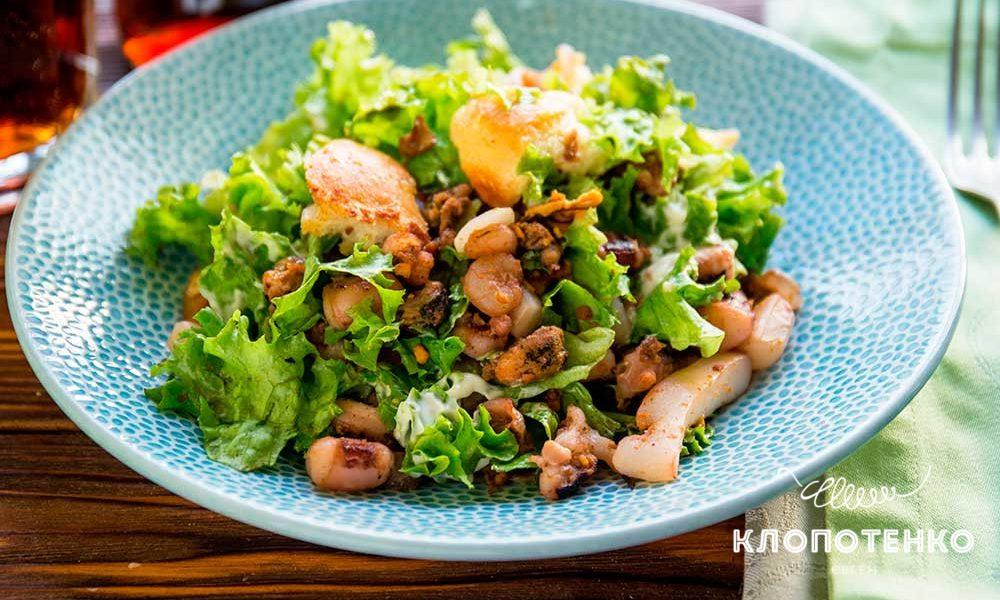
Мідії, креветки та кальмари на подушці зі свіжого листя салату.
| ДЕСЕРТИ |
|---|
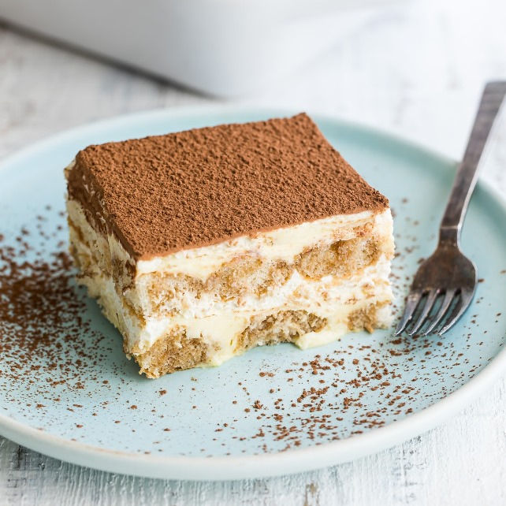
Класичний італійський десерт на основі печива савоярді, ніжного маскарпоне та міцної кави.
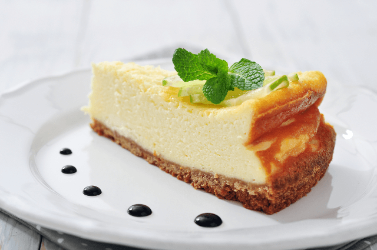
Ніжний вершковий чізкейк на пісочній основі, подається з ароматним ягідним соусом.